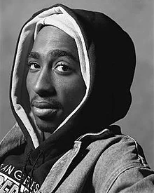
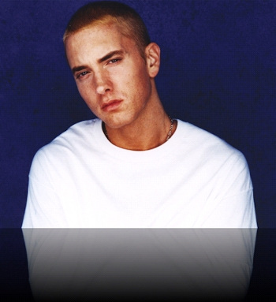
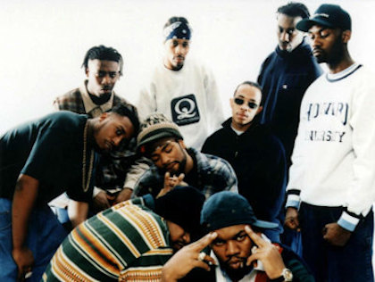
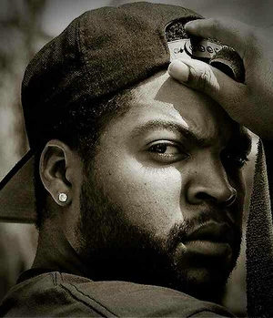
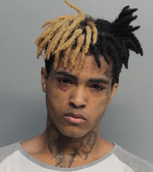
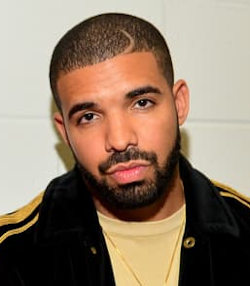
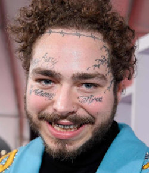

Ami-Rap
Früher Rap
Der Ursprung des Raps liegt in den USA. Ende der 70er Jahre verbreitete sich die Musikrichtung immer stärker, vor allem bei sozial Benachteiligten in den vorwiegend von Schwarzen belebten Ghettos. Einerseits diente die Musik dazu sich selbst darstellen zu können, aber auch um politische und soziale Themen aufzugreifen und Missstände aufzuzeigen.
Später, in den 90er Jahren, handeln die Texte oft von Problemen mit Kriminalität und Drogen. Dabei werden nicht selten Schimpfwörter von den Künstlern verwendet, um die eigenen Emotionen, vor allem Wut, Zorn, aber auch Trauer, noch deutlicher hervorzubringen.
Dadurch genossen Rapper selten gutes Image und die Musik konnte somit selbstverständlich auch nicht im Radio gespielt werden, weshalb die Popularität des Raps zu diesem Zeitpunkt begrenzt war.
Wie bei jeder Musikrichtung gibt es einige Künstler, die die Musik und deren Stil stark geprägt haben. Es folgt eine kurze Aufzählung der für mich elementaren Rapper des frühen Raps:
- Tupac Shakur
Die Texte von Shakurs Titeln drehen sich um Ghetto-Erfahrungen und Rassismus.
Dabei bedient er sich einer expliziten, teils gewaltverherrlichenden Sprache.
Politisch konkreter wird 2Pac etwa in dem Lied Panther Power, das den American Dream verwirft und sich antikapitalistischer Rhetorik im Stil der Black-Panther-Linken bedient.
Der teilweise gewaltverherrlichenden Sprache stehen Stücke mit gefühlvollen Texten gegenüber, etwa Keep Ya Head Up oder Dear Mama.
Ersteres Lied richtet sich gegen Frauendiskriminierung, das zweite ist eine ausgiebige Danksagung und Shakurs Mutter gewidmet.
|

© MTV Networks and Amaru Entertainment
Quelle: https: //www.imdb.com/name/nm0000637/mediaviewer/rm2881198336
|
- Eminem
Eminem (eigentlich Marshall Bruce Mathers) sieht sich als jemand, der mit seinen Texten das „stereotype Rappergehabe“ ironisch verhöhnt, und will auch seine übrigen Texte so interpretiert sehen: „Nehmt keine Drogen, habt keinen ungeschützten Geschlechtsverkehr, seid nicht gewalttätig – überlasst das mir!“
Eminems Musik ist geprägt durch lustige und clevere Wortspiele.
In seinem 2013 erschienen Song „Rap-God“ stellte Eminem seine unvergleichbaren Fähigkeiten in Sachen Flowwechsel und Double-bzw. Tripletime (=Bezeichnung für eine Passage, die mit doppelter Geschwindigkeit gerappt wird) unter Beweis.
Wenn es um Letzteres geht, darf Eminem wohl ohne Bedenken als „Rap-God“ bezeichnet werden.
Hauptsächlich drehen sich die Themen seiner Texte aber um die Verarbeitung seiner Kindheit , um seine Jugend und um seine missglückte Ehe mit Kimberly Scott. Außerdem nimmt er des öfteren Bezug auf seine Töchter (z.B. in „Mockingbird“)
2002 spielte Eminem zudem die Hauptrolle in dem halb-autobiographischen Film
8 Mile. Darin verkörperte er einen weißen Rapper namens Rabbit. Für sein Kino-Debüt erntete Eminem überwiegend positive Kritiken und gewann sogar einen Oscar für Lose Yourself als besten Original-Song
|

© Universal Vertrieb
|
| WU-TANG |
Ice-Cube |
Notorious-BIG |
| Der Wu-Tang Clan ist eine Hip-Hop-Gruppe aus New York City. Anfang der 1990er etablierte sie einen musikalisch neuen, düsteren und surrealen Stil im Hip-Hop. Ihr Debütalbum Enter the Wu-Tang (36 Chambers) gilt heute als Meilenstein in der Hip-Hop-Geschichte. |
Ice Cube (bürgerlich O’Shea Jackson) war Mitglied der Rapgruppen N.W.A. (trugen entscheidend zur Popularisierung des Gangsta-Raps bei und gelten als wichtige Vertreter des Westcoast-Hip-Hop.) und Westside Connection und veröffentlichte zehn Soloalben. Neben der musikalischen Karriere spielte er auch in mehreren bekannten Filmen mit. |
The Notorious B.I.G. (bürgerlich Christopher George Latore Wallace), auch als Biggie, B.I.G. und Frank White bekannt, war einer der bedeutendsten US-amerikanischen Rapper der 1990er-Jahre. Wallace gilt als Zugfigur des Hardcore-Rap und ist, gemessen an den Verkaufszahlen, einer der kommerziell erfolgreichsten Rapper überhaupt. |
| https: //www.npr.org/sections/therecord/2013/04/08/176519640/the-wu-tang-clans-20-year-plan?t=1568297936101 |
©Jill Toper, Quelle:https: //www.pinterest.de/pin/286119382559981390/?nic=1 |
 ©Bad Boy Records, Quelle:https: //upload.wikimedia.org/wikipedia/en/5/51/The_Notorious_B.I.G.jpg ©Bad Boy Records, Quelle:https: //upload.wikimedia.org/wikipedia/en/5/51/The_Notorious_B.I.G.jpg |
Rap heute
Durch die weltweite Nutzung des Internets, konnten Rapper immer mehr Menschen via Plattformen wie Youtube oder Spotify erreichen. Dadurch stieg die Popularität der Musik in den letzten 10-15 Jahren rasant an, wodurch mittlerweile Weltstars wie ,,Drake" oder ,,69" mit Ihren Hits quasi konstant in den TOP-10 der Charts landen. Eine Milliarde Aufrufe auf ein Musik-Video ist keine Seltenheit mehr, was das Ausmaß der Entwicklung des Raps verdeutlichen sollte.
Aus der einstigen Nischenmusik wurde ein internationales Big-Business, das zunehmend an Popularität und Bedeutung gewinnt.
Mittlerweile gibt es unzählige, bekannte und erfolgreiche Rapper. Alle aufzuzählen würde den Rahmen sprengen. Deshalb hier einer der meiner Ansicht nach interessantesten und wichtigsten:
- XXXTentacion
XXXTentacion, bürgerlich Jahseh Dwayne Ricardo Onfroy (* 23. Januar 1998 in Florida) bezeichnete sich häufig eher als Künstler statt als Rapper, da er viele Musikrichtungen miteinander vermischte und somit keinem Genre zugeordnet werden kann; deutlich wird das in seiner 2016 veröffentlichten EP Willy Wonka Was a Child Murderer, in welcher die Musik hauptsächlich von Heavy Metal und Indie beeinflusst ist.
Vor allem in seinem 2018 erschienenen, zweiten Album handelten die Songs oft von persönlichen Problemen, Zukunftsängsten und sogar Suizidgedanken.
Mit Sad! Und changes gelang ihm der Sprung auf Platz eins der US-amerikanischen Albumcharts.
3 Monate später wurde Onfroy wurde am 18. Juni 2018 in Deerfield Beach beim Verlassen eines Motorsportladens in seinem Auto von mehreren Tätern ausgeraubt und angeschossen. Er verstarb rund eine Stunde nach dem Überfall in einem Krankenhaus an seinen Schussverletzungen.
|

©State of Florida, Quelle:https: //commons.wikimedia.org/wiki/File:Xxxtentacion_mugshot.jpg
|
- Drake
- Aubrey Drake Grahams (* 24. Oktober 1986 in Toronto, Ontario) Karriere startete zunächst mit einer sechsjährigen Schauspielätigkeit bei einer Jugendserie. Noch bei den Dreharbeiten begann der heutige Superstar schließlich 2006 seine ersten Mixtapes zu veröffentlichen und zu rappen. 2007 landete er bereits, ohne einen Plattenvertrag, mit dem Song Replacement Girl einen Erfolg. Mit einer einzigartigen Mischung aus R&B und Hip-Hop wurde der Rapper Drake mit Unterstützung von Kanye West, Jay-Z und allen voran Lil Wayne bekannt.
Drake veröffentlichte bislang vier Studio-Alben: Thank me later (2010), Take Care (2011), Nothing was the Same (2013) sowie Views (2016). All diese Werke haben zwei Dinge gemeinsam: Sie erreichten sowohl in den USA als auch in Kanada jeweils Platz 1 der Album-Charts und wurden alle mehrfach mit Platin ausgezeichnet.
Somit ist Drake momentan der erfolgreichste Rapper und gehört ebenfalls zu den wichtigsten Musik-Künstlern des 21. Jahrhundert.
|

©Prince Williams/WireImage, Quelle:https: //www.biography.com/musician/drake
|
- Post Malone
- Post Malone ist der Künstlername des Rappers und Produzenten Austin Richard Post (*4. Juli 1995 in Syracuse(NY)) aus den USA.
Er erzielte gleich mit seiner ersten Single White Iverson, die im Jahr 2015 auf dem Label Republic erschien, eine hohe Platzierung in den Charts seines Heimatlands.
Zwei Jahre später schaffte er mit der Single Rockstar sogar einen Nummer-eins-Hit in den USA und weiteren Ländern wie Großbritannien. Sein Debütalbum "Stoney" aus dem Jahr 2016 kletterte in den USA wiederum bis auf den vierten Platz der Charts.
Laut eigener Aussage jedoch möchte Post nicht als Rapper betitelt werden: Ich will einfach nur eine Person sein, die Musik macht. Ich kreiere Lieder, die ich mag und von denen ich denke, dass sie abgehen. Musik, von der ich glaube, dass sie Leute mögen, die mich im realen Leben mögen.
|

©Getty Images, Quelle: https://www.bravo.de/post-malone-382266.html
|